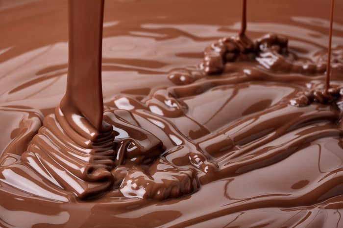

초콜릿(Chocolate)은 카카오 콩을 재료로 가공한 식품이다.
숙성한 카카오 콩을 볶은 뒤 숙성된 카카오 콩을 갈아서 만든 카카오 매스와 지방 성분만으로 만들어진 카카오 버터를 혼합하여 만드는데 설탕의 다른 재료를 더 넣어 만들기도 한다.
카카오 매스의 함량에 따라 다크 초콜릿, 밀크 초콜릿, 화이트 초콜릿, 루비 초콜릿 등으로 구분한다.(다이어트를 하는 사람들을 위해 무설탕 초콜릿도 개발 중이다.)
외래어 표기법에 의해 '초컬릿'으로 적기도 하지만 둘째 음절은 'ㅗ'로 발음하는 경향에 따라 '초콜릿'으로 표기한다.
